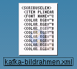
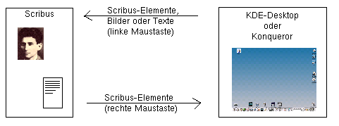

2.4 Drag & Drop
Seit Version 0.3.9 untertützt Scribus weitgehende Interaktion mittels Drag & Drop mit dem KDE-Desktop.
Da die linke Maustaste zum Verschieben der Scribus-Elemente auf der Seite reserviert ist, wird hierfür die
rechte Maustaste verwendet. Sie können jedes beliebige Scribus-Element (Text-, Bildrahmen, Polygone
etc). bei gedrückter rechter Maustatste auf dem KDE-Desktop ablegen:

(Bitte beachten Sie, dass je nach verwendeter KDE-Version bzw. Ihren persönlichen Desktop-Einstellungen
abgelegte Elemente bei Ihnen etwas anders aussehen können).
Anders herum können Sie die abgelegten Elemente auch wieder per Drag & Drop in Scribus-Dokumente
zurückkopieren. Hierzu müssen Sie nun, wie unter KDE üblich, die linke Maustaste benutzen!
Das Drag & Drop funktioniert auch zwischen dem Konqueror und Scribus.
Aber auch anders herum können Sie mit der linken Maustaste schnell Texte oder Bilder vom KDE-Desktop
bzw. dem Konqueror in die entsprechenden Scribus-Rahmen einfügen:

Lassen Sie ein mit der rechten Maustaste gezogenes Scribus-Element innerhalb von Scribus "fallen",
so wird eine Kopie erstellt.